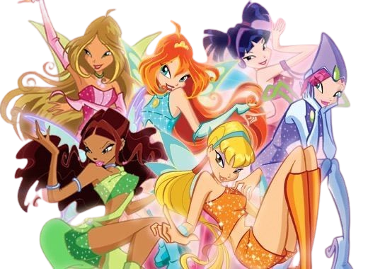
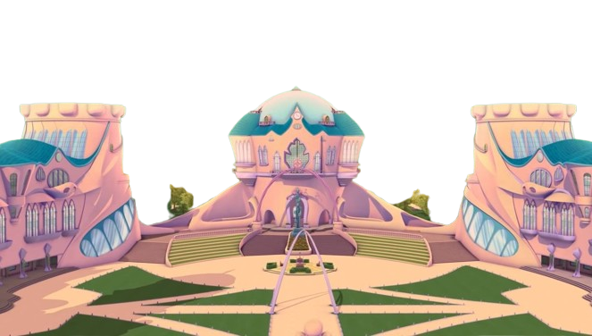
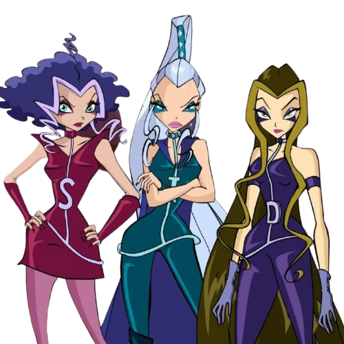
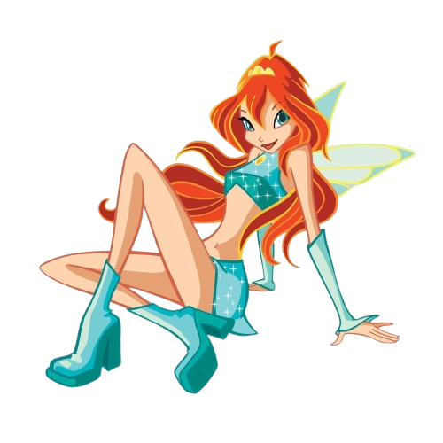
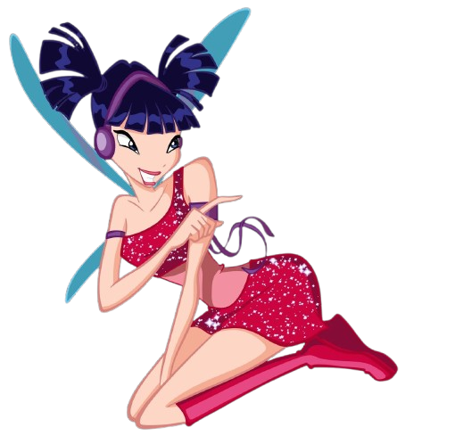
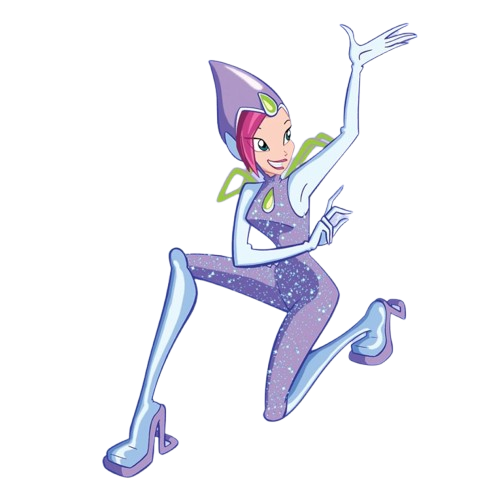
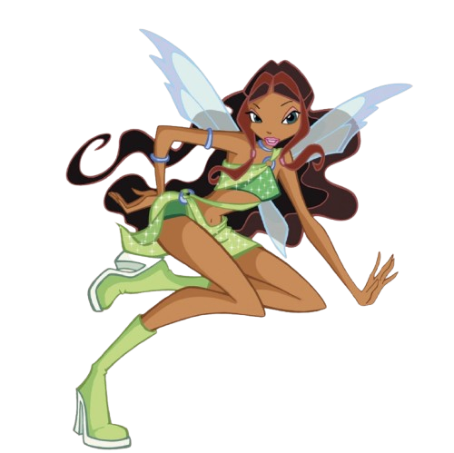

☀️ Stella — Fada do Sol e da Lua 🌞👑✨
Fada da Luz, adora moda, brilho e diversão. Vem de Solária e é cheia de energia. Leal às amigas, espalha alegria e confiança por onde passa.

O grupo das Winx é formado inicialmente por seis fadas, cada uma com poderes únicos e características próprias. Elas representam uma combinação de forças da natureza, emoções humanas e estilos distintos de personalidade e visual.

Alfea é a escola onde Bloom e suas amigas do Clube das Winx estudam para se tornarem fadas completas. Localizada na dimensão mágica de Magix, Alfea é um lugar encantado, repleto de torres, jardins, criaturas mágicas e, claro, muita aventura.

As Trix formam um trio de bruxas poderosas, astutas e perigosamente ambiciosas, conhecidas por sua obsessão incontrolável por poder. Estudantes da Torre Nebulosa — a escola rival de Alfea

Fada da Chama do Dragão, é a líder do grupo. Vem da Terra, mas descobre que é a princesa de Domino, um reino perdido. É corajosa, justa e tem um coração enorme.
Fada da Luz, adora moda, brilho e diversão. Vem de Solária e é cheia de energia. Leal às amigas, espalha alegria e confiança por onde passa.

Fada da Natureza, doce e gentil, tem um coração puro e ama todas as formas de vida. Vem de Linphea e usa seu poder para proteger o equilíbrio natural.

Fada da Música, vive com ritmo no coração. Criativa e intensa, expressa seus sentimentos através do som. Vem de Melody e valoriza a sinceridade e a liberdade.

Fada da Tecnologia, lógica e determinada. Ama resolver problemas e criar invenções incríveis. Vem de Zenith e acredita que a razão e o coração devem andar juntos.

Fada das Ondas, valente e aventureira. Vem de Andros e domina o poder da fluidez e do movimento. É forte, leal e nunca abandona quem ama.
💫
🫧
✨